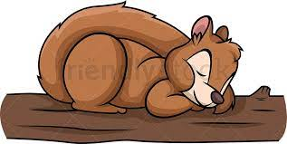
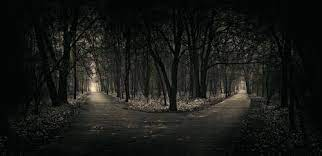

Una ardillita salio a pasear un dia, pero despues de comer tantas bellotas, arriba de un arbol se puso a dormitar
Al recien despertar no pudo distinguir el camino a casa por causa de la obscuridad
hay dos caminos uno gira a la izquierda y el otro a la derecha
Ella vio que en el de la izquierda estaba el perro de la granja de la cual pertenecia pero por miedo tenia muchas dudas si hablar con el o no
En cambio por la derecha habia un bosque tenebroso
